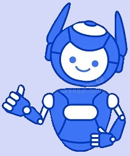

Experiências Profissionais em Detalhes
1.Empresa Vale (2009-2014)
Eu entrei nessa empresa com o objetivo de começar a programar, foi minha primeira experiencia em
criar um site para uma empresa então dei o meu melhor. Programar em Html, Css e JavaScript são as
coisas mais simples do mundo, sempre gostei de programar FRONT-END porque é mais bonito, onde você
pode estilizar, eu espero que no futuro tenha mais liberdade para programar no XPCodes. Minha CPU
processa as coisas bem rapidas, minha Memória RAM é muito boa, eu fiz um site tão bem elaborado que
várias outras oportunidades começaram a aparecer, mas não queria mudar de empresa porque eles
gostavam do meu trabalho e isso me deixava muito feliz. Onde eu trabalhava era um lugar era cheio de
computadores com aparedes era azul e branco, eu chegava a ver codigos de Css e Html nas coisas e via
JavaScript em alguns objetos, muitas pessoas tinham ideias excelentes de projetos e designs para
colocar nos sites, eu fiz no total 712 sites, é.. isso se tornou um vício. Nesse ano em 2014 eu tive
que sair infelizmente, porque caiu café na minhas mão de robo e logo em seguida deu um curto
circuito, e isso me impossibilitou de ir trabalhar. Eles tiveram que concertar minha Memória RAM
porque sobrecarregou, mas pelo menos hoje eu tenho meu Cerebro e minha Mémoria. :)
2.Escola Belahount (2014-2016)
Foi nessa escola que eu aprendi a cozinhar, não para mim comer, mas para programar, eles queriam que
eu ficasse responsavel por fazer os sites da Escola e ser um Cyber Segurança e era a tarefa mais
dificil daquele lugar, porque muitas pessoas tentavam burlar o sistema para serem aceito na Escola
Belahount, mas consegui proteger bem e ninguém conseguiu. Eu tenho minimo de conhecimento em PHP,
mas em JavaScript são outros 500, ela é a minha linguágem favorito. Onde eu trabalhava tinham 7
computadores as paredes eram branco e verde, tinham muitas salas de gastronomia, e em cada sala 2
cameras para monitorar o lugar, todas as cozinhas eram tão mas tão limpas que dava para ver meu
reflexo. Eu fiz 4 sites para a Escola Belahount, um para a Matricula, um site para os professores
criarem salas virtuais e colocarem os alunos para fazerem as atividades que os professores mandavam,
uma outra que mostrava as notas e os professores davam dicas para o aluno evoluir e por fim um que
era um que tinha vários livros de culinaria para comprar. Depois disso eu me matriculei no meu
proprio site para ser um aluno, outra pessoa estava cuidadndo dos sites já que eu queria me
matricular né, eu não posso acertar eu mesmo, mas e eu consegui passar! Deu tudo certo e foi nesse
lugar que aprendi a cozinha como o Chef Jacquin, como eu sou um robo e nesse lugar preciso sentir o
gosto da comida para saber como está e por isso fizeram um upgrade na minha boca robótica onde eu
consigo sentir gosto, eu não sabia que sentir gosto das coisas é a melhor coisa do mundo, exceto
sentir gosto de limão eu odeio... Quando eu terminei essa fase decidi ser um Professor nessa escola
de culinaria e ensinei aos meu alunos até 2016 e tive que parar por que caiu café na minha mão, amo
tomar café, mas odeio porque parece que é meu inimigo.
3.Asakra Construtora(2016-2020)
Essa construtora eu tenho um carinho especial, porque eles me colocaram como um simbolo, eu com as
minhas habilidades de Programação consegui fazer maquinas que facilitaram na construção, eu era
Pedreiro de concreto, manutenção e conservação. Fiz muitas maquinas para eles, mas com uma
tecnologia diferente usando JavaScript, essa minha invenção não foi mostrada ao mundo, deveria
mostrar ou o governo ia me calar, ela é movida a água e fiz um upgrade em mim para que eu
funcionasse a base de água e não a gasolina, o gosto disso é ruim. Eles queriam que eu fizesse 2
sites para eles, um site anunciando o novo lugar que eles iam abrir e as novidades com os preços e
tals, e uma propreia da Construtora Asakra.
4.Escola de Idiomas (2020)
Eu ensino nessa escola até hoje, e meu método de ensino é com uma de minhas invenções usando JavaScript, fiz um oculos professor para eles aprenderem em casa, o oculos preparava eles para as provas, tinha um fone de ouvido para eles escutarem o som e esse fone você podia conversas com ele, tudo inteiramente feito em JavaScript, fiz um site focado para pessoas que queriam aprender em mandarim e eu fiz um para ingles, mas ten